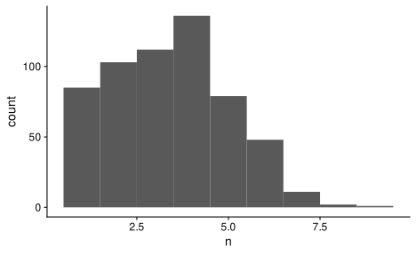
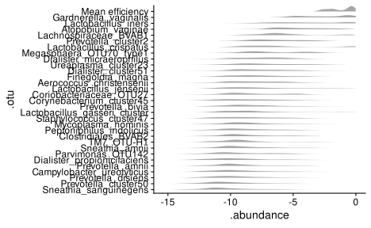
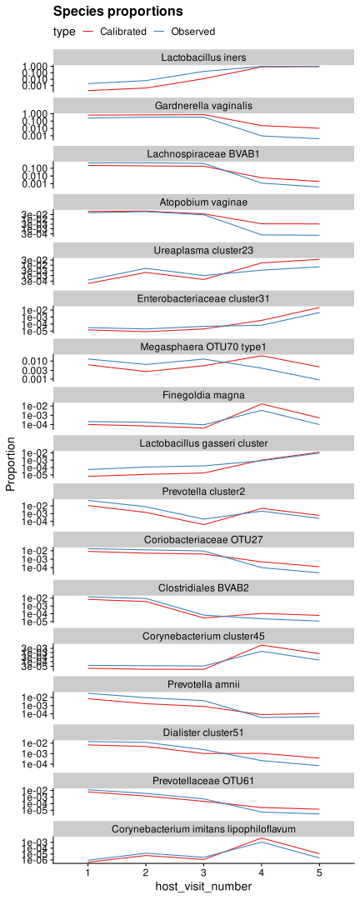
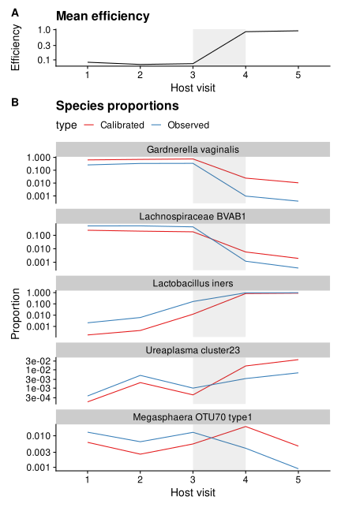
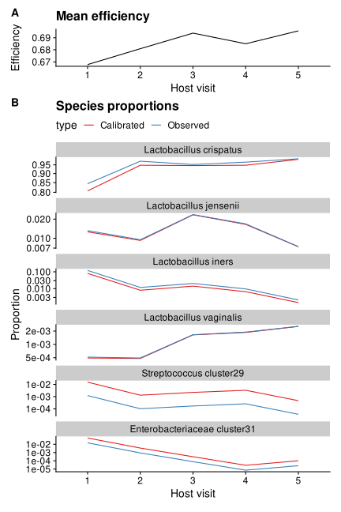

This document is part of a series of analyses of the impact of taxonomic bias on vaginal community dynamics in MOMSPI dataset (Fettweis et al. (2019)), using the bias estimated from the Brooks et al. (2015) mock community data. The purpose of this document is to demonstrate the key dynamics we want to highlight in the manuscript.
Setup
R setup
# Tools for microbiome data
library(speedyseq)
# Tools for general purpose data manipulation and plotting
library(tidyverse)
library(fs)
# ggplot helpers
library(ggbeeswarm)
library(cowplot)
library(patchwork)
library(scales)
# stats helpers
# library(broom)
library(metacal); packageVersion("metacal")
[1] '0.2.0.9008'theme_set(theme_cowplot())
colors_brooks <- c(
"Atopobium_vaginae" = "#009E73",
"Gardnerella_vaginalis" = "#56B4E9",
"Lactobacillus_crispatus" = "#D55E00",
"Lactobacillus_iners" = "#505050",
"Prevotella_bivia" = "#0072B2",
"Sneathia_amnii" = "#CC79A7",
"Streptococcus_agalactiae" = "#E69F00")
scale_y_custom <- scale_y_continuous(
trans = 'log10',
breaks = trans_breaks('log10', function(x) 10^x),
labels = trans_format('log10', math_format(10^.x))
)
Estimate bias from Brooks et al. (2015)
We can estimate the efficiencies for the control species used in the cellular mocks of Brooks et al. (2015) by running the example code in the docs for metacal::estimate_bias(). This code uses the observed and actual species-level abundance tables which were produced by McLaren, Willis, and Callahan (2019) from the SI files of Brooks et al. (2015) and are included in the metacal package.
dr <- system.file("extdata", package = "metacal")
list.files(dr)
[1] "brooks2015-actual.csv" "brooks2015-observed.csv"
[3] "brooks2015-sample-data.csv"actual <- file.path(dr, "brooks2015-actual.csv") |>
read.csv(row.names = "Sample") |>
as("matrix")
observed <- file.path(dr, "brooks2015-observed.csv") |>
read.csv(row.names = "Sample") |>
subset(select = - Other) |>
as("matrix")
# Estimate bias with bootstrapping for error estimation
mc_fit <- estimate_bias(observed, actual, margin = 1, boot = TRUE)
summary(mc_fit)
Summary of a metacal bias fit.
Estimated relative efficiencies:
# A tibble: 7 Ã 4
taxon estimate gm_mean gm_se
<chr> <dbl> <dbl> <dbl>
1 Atopobium_vaginae 0.285 0.285 1.04
2 Gardnerella_vaginalis 0.160 0.159 1.05
3 Lactobacillus_crispatus 2.29 2.29 1.03
4 Lactobacillus_iners 4.68 4.69 1.02
5 Prevotella_bivia 1.79 1.79 1.04
6 Sneathia_amnii 4.59 4.60 1.04
7 Streptococcus_agalactiae 0.250 0.250 1.03
Geometric standard error estimated from 1000 bootstrap replicates.rm(actual, observed, dr)
control_species <- mc_fit %>% coef %>% names
control_genera <- control_species %>% str_extract('^[^_]+')
Load the MOMSPI data
TODO: replace this code chunk with one that pulls data from the github repo into _data/
Load the MOMSPI Stirrups profiles into phyloseq
path_momspi <- '~/research/momspi'
otu <- path(path_momspi, "output", "stirrups-profiles", "abundance-matrix.csv.bz2") %>%
read_csv(
col_types = cols(.default = col_double(), sample_name = col_character())
) %>%
otu_table(taxa_are_rows = FALSE)
sam <- path(path_momspi, "output", "stirrups-profiles", "sample-data.csv.bz2") %>%
read_csv(col_types = "ccccccic") %>%
mutate(across(host_visit_number, factor, ordered = TRUE)) %>%
sample_data
tax <- path(path_momspi, "output", "stirrups-profiles", "taxonomy.csv.bz2") %>%
read_csv(col_types = cols(.default = col_character())) %>%
tax_table %>%
mutate_tax_table(
species = case_when(!is.na(genus) ~ .otu)
)
momspi_raw <- phyloseq(otu, sam, tax) %>%
mutate_tax_table(across(.otu, str_replace,
"(?<=Lactobacillus_crispatus)_cluster", "")) %>%
mutate_sample_data(., sample_sum = sample_sums(.))
taxa_names(momspi_raw) %>% str_subset("crispatus")
[1] "Lactobacillus_crispatus" "Lactobacillus_crispatus_type1"stopifnot(all(control_species %in% taxa_names(momspi_raw)))
L crisp type 1 is just a few reads so we can ignore it (check)
p1 <- momspi_raw %>% sample_sums %>% qplot + scale_x_log10() +
labs(x = 'sample sum')
p2 <- momspi_raw %>% taxa_sums %>% qplot + scale_x_log10() +
labs(x = 'otu sum')
p1 + p2
Letâs filter samples with fewer than 1000 reads (also requirement used by the authors)
momspi <- momspi_raw %>%
filter_sample_data(sample_sum >= 1e3)
Note, we might want to be conservative in terms of composition shifts by making the min prop of species 1e-3. However this might add up to a large effect if we apply it to all species. Could instead filter to 1e4 reads and threshold at 1e-4, or 3e-4
Letâs see if we can filter the super-low-count species without affecting any remaining samples too much:
x <- (momspi %>% filter_taxa2(~sum(.) >= 2e2) %>% sample_sums) / (momspi %>% sample_sums)
summary(x)
Min. 1st Qu. Median Mean 3rd Qu. Max.
0.99 1.00 1.00 1.00 1.00 1.00 Dropping OTUs with less than 200 reads has a negligible impact on the samples, so letâs do that.
momspi <- momspi %>% filter_taxa2(~sum(.) >= 2e2)
Finally, letâs impute zeros using the Dirichlet posterior mean, with the prior respecting the average proportions across samples.
taxa_mean_prop <- momspi %>%
otu_table %>%
transform_sample_counts(close_elts) %>%
orient_taxa(as = 'cols') %>%
as('matrix') %>%
colMeans
stopifnot(sum(taxa_mean_prop) == 1)
prior_vec <- taxa_mean_prop * ntaxa(momspi)
stopifnot(identical(length(prior_vec), ntaxa(momspi)))
# Note the need for the seq_along trick to get phyloseq to allow this
# adjustment
momspi <- momspi %>% transform_sample_counts(~ prior_vec[seq_along(.x)] + .x)
Checks
how many subjects?
how does the number of visits vary by subject?
Min. 1st Qu. Median Mean 3rd Qu. Max.
1.00 2.00 3.00 3.39 4.00 9.00 cts %>%
ggplot(aes(x = n)) +
geom_histogram(binwidth = 1)

Calibrate the MOMSPI measurements
Owing to the large sample size of the mock community experiment, the standard errors in the estimated bias for the control species are quite small, and our uncertainty in the true bias of the MOMSPI study is much larger than what these standard errors imply. Therefore I will use the point estimate of the bias for the control species as if it were known exactly, but we should consider this to just be a hypothesis of what the bias truly is in the MOMSPI study. This hypothetical nature applies even more strongly when we extrapolate to other species.
Since donât have a way to directly estimate the efficiencies of the other OTUs, weâll impute them as follows.
- Set the efficiencies of the 7 control species to the directly estimated values
- Compute efficiencies for the 6 control genera to the efficiency of the control species (if only one) or the geometric mean efficiency (if more than one; here this is just Lactobacillus)
- Use these genera-level efficiencies for the efficiencies of OTUs that are not control species but are in the same genus as one
- For other OTUs, use the geometric mean of the genera efficiencies; this is similar to using the mean of the 7 control species but gives Lactobacillus equal weight to the other genera.
# A tibble: 7 Ã 2
species efficiency
<chr> <dbl>
1 Atopobium_vaginae 0.285
2 Gardnerella_vaginalis 0.160
3 Lactobacillus_crispatus 2.29
4 Lactobacillus_iners 4.68
5 Prevotella_bivia 1.79
6 Sneathia_amnii 4.59
7 Streptococcus_agalactiae 0.250bias_genus <- bias_species %>%
mutate(genus = str_extract(species, "^[^_]+"), .before = 1) %>%
with_groups(genus, summarize, across(efficiency, gm_mean)) %>%
print
# A tibble: 6 Ã 2
genus efficiency
<chr> <dbl>
1 Atopobium 0.285
2 Gardnerella 0.160
3 Lactobacillus 3.27
4 Prevotella 1.79
5 Sneathia 4.59
6 Streptococcus 0.250# Match on genus or species, depending on which is available; then set others
# to average genus efficiency
bias_all <- tax_table(momspi) %>% as_tibble %>%
left_join(bias_species, by = "species") %>%
left_join(bias_genus, by = "genus") %>%
mutate(
efficiency = case_when(
!is.na(efficiency.x) ~ efficiency.x,
!is.na(efficiency.y) ~ efficiency.y,
TRUE ~ gm_mean(bias_genus$efficiency)
)
) %>%
select(-efficiency.x, -efficiency.y) %>%
# standardize to L. iners, the most efficiently measured
mutate(
across(efficiency, ~ . / max(.))
) %>%
glimpse
Rows: 282
Columns: 10
$ .otu <chr> "Clostridiaceae_1_OTU17", "Lachnospiraceae_BVAB1"â¦
$ domain <chr> NA, NA, NA, NA, NA, NA, "Bacteria", "Bacteria", "â¦
$ phylum <chr> NA, NA, NA, NA, NA, NA, "Firmicutes", "Firmicutesâ¦
$ class <chr> NA, NA, NA, NA, NA, NA, "Bacilli", "Clostridia", â¦
$ order <chr> NA, NA, NA, NA, NA, NA, "Lactobacillales", "Clostâ¦
$ family <chr> NA, NA, NA, NA, NA, NA, "Aerococcaceae", "Veillonâ¦
$ genus <chr> NA, NA, NA, NA, NA, NA, "Abiotrophia", "Acidaminoâ¦
$ control <chr> "FALSE", "FALSE", "FALSE", "FALSE", "FALSE", "FALâ¦
$ species <chr> NA, NA, NA, NA, NA, NA, "Abiotrophia_defectiva", â¦
$ efficiency <dbl> 0.175212, 0.175212, 0.175212, 0.175212, 0.175212,â¦Observed and calibrated proportions
Compute observed and calibrated proportions with all taxa.
momspi_obs <- momspi %>%
transform_sample_counts(close_elts)
# note, calibrate() automatically subsets to just the focal taxa if we haven't
# already
momspi_cal <- momspi_obs %>% calibrate(bias_all_vec)
Sample summary statistics
- Mean efficiencies
- Most abundant species
- Proportion of Lactobacillus
To compute the mean efficiencies, we can use metacal::perturb() to multiply efficiencies by the actual proportions for each sample (using norm = "none" to avoid renormalizing the results), then summing up the values from each sample with phyloseq::sample_sums(). Itâs also useful to get the mean efficiency among just the control species.
tmp1 <- momspi_cal %>%
perturb(bias_all_vec, norm = "none") %>%
sample_sums %>%
enframe('.sample', 'mean_efficiency')
tmp2 <- momspi_cal %>%
filter_tax_table(.otu %in% control_species) %>%
transform_sample_counts(close_elts) %>%
perturb(bias_species %>% deframe, norm = "none") %>%
sample_sums %>%
enframe('.sample', 'mean_efficiency_controls')
mean_eff <- left_join(tmp1, tmp2, by = '.sample')
For each sample, letâs get the most abundant species in the calibrated and uncalibrated profiles.
get_top_species <- function(ps) {
x <- ps %>%
otu_table %>%
as_tibble(pivot = TRUE) %>%
with_groups(.sample, slice_max, .abundance, n = 1) %>%
# add count to check for ties
add_count(.sample)
if (anyDuplicated(x$.sample))
stop('Ties present')
x %>% select(.sample, .otu, .abundance)
}
top_species <- list(
Uncalibrated = momspi_obs,
Calibrated = momspi_cal
) %>%
map_dfr(get_top_species, .id = 'type')
Which species tend to be dominant?
# A tibble: 53 Ã 2
.otu n
<chr> <int>
1 Lactobacillus_iners 779
2 Lactobacillus_crispatus 425
3 Lachnospiraceae_BVAB1 238
4 Gardnerella_vaginalis 137
5 Lactobacillus_gasseri_cluster 68
6 Prevotella_cluster2 53
7 Atopobium_vaginae 52
8 Lactobacillus_jensenii 50
9 Sneathia_amnii 23
10 Prevotella_bivia 16
11 Streptococcus_cluster29 16
12 Mycoplasma_girerdii 11
13 Mycoplasma_hominis 6
14 Corynebacterium_cluster58 5
15 Lactobacillus_delbrueckii 5
16 Bifidobacterium_longum_infantis_suis 4
17 Finegoldia_magna 4
18 Prevotella_disiens 4
19 Staphylococcus_cluster47 4
20 Streptococcus_agalactiae 4
# ⦠with 33 more rows# A tibble: 60 à 2
.otu n
<chr> <int>
1 Gardnerella_vaginalis 525
2 Lactobacillus_iners 491
3 Lactobacillus_crispatus 386
4 Lachnospiraceae_BVAB1 183
5 Atopobium_vaginae 63
6 Lactobacillus_jensenii 51
7 Lactobacillus_gasseri_cluster 45
8 Streptococcus_cluster29 28
9 Streptococcus_anginosus 20
10 Prevotella_cluster2 16
11 Mycoplasma_girerdii 15
12 Streptococcus_agalactiae 11
13 Finegoldia_magna 9
14 Ureaplasma_cluster23 9
15 Corynebacterium_cluster58 7
16 Mycoplasma_hominis 7
17 Clostridiales_OTU22 5
18 Lactobacillus_delbrueckii 5
19 Prevotella_bivia 5
20 Anaerococcus_OTU147 4
# ⦠with 40 more rowsThe most important species/OTU that we do not have direct bias information on at the species or genus level is Lachnospiraceae BVAB1.
The proportion of Lactobacillus in each sample - will simply do all control genera.
genus_prop <- momspi_cal %>%
subset_taxa(genus %in% control_genera) %>%
tax_glom('genus') %>%
as_tibble %>%
select(.sample, genus, .abundance) %>%
pivot_wider(names_from = genus, values_from = .abundance)
Letâs join the most abundant species and key genera proportions to the mean efficiecies for further analysis. For plotting, weâll create a version of the top taxa that only colors the taxa that are most often dominant.
tmp <- top_species %>%
select(-.abundance) %>%
pivot_wider(names_from = type, values_from = .otu,
names_glue = 'top_{str_to_lower(type)}')
mean_eff1 <- mean_eff %>%
left_join(sample_data(momspi_cal) %>% as_tibble, by = '.sample') %>%
left_join(genus_prop, by = '.sample') %>%
left_join(tmp, by = '.sample') %>%
mutate(
top_plot = fct_lump_n(top_calibrated, 7)
)
rm(tmp)
Visual analysis of mean efficiency distribution and role of key species
We can make a plot similar to that used for the Leopold et al analysis.
# First let's look at the distribution of mean efficiencies
p1 <- mean_eff1 %>%
ggplot(aes(mean_efficiency, fill = top_plot)) +
geom_histogram() +
# annotate("point", y = 200, x = bias, color = "black", shape = "|", size = 7) +
scale_x_log10() +
expand_limits(x = range(bias_all_vec)) +
scale_fill_brewer(type = "qual") +
labs(
# x = "Sample mean relative efficiency (SMRE)",
x = "Mean efficiency",
y = "Number of samples",
fill = 'Most abundant species'
)
# Next let's plot Lactobacillus proportion against mean efficiency, as another
# look at the relationship between Lacto and mean efficiency.
p2 <- mean_eff1 %>%
ggplot(aes(mean_efficiency, Lactobacillus, color = top_plot)) +
geom_point() +
scale_x_log10() +
expand_limits(x = range(bias_all_vec)) +
scale_y_continuous(
trans = scales::pseudo_log_trans(sigma = 1e-2),
breaks = c(0, 0.01, 0.03, 0.1, 0.3, 1)
) +
scale_color_brewer(type = "qual") +
labs(
y = "Lactobacillus proportion",
x = "Mean efficiency",
color = 'Most abundant species'
)
# The yellow makes the L crispatus points a bit hard to see, so let's swap it's
# color with the rarer L. gasseri in the final figure.
colors_top <- RColorBrewer::brewer.pal(8, 'Accent')[c(1,2,3,5,4,6,7,8)]
(p1 + ggtitle("Distribution of sample mean efficiencies")) /
(p2 +
ggtitle("Lactobacillus proportion vs. mean efficiency") +
theme(legend.position = 'none')
) +
plot_annotation(tag_levels = "A") +
plot_layout(guides = 'collect') &
scale_fill_manual(
values = colors_top,
labels = function(x) str_replace_all(x, '_', ' ')
) &
scale_color_manual(
values = colors_top,
labels = function(x) str_replace_all(x, '_', ' ')
)
# The x-axis is very close but not completely aligned; I think I need to
# manually set the x limits to get perfect alignment, but that leads to some
# samples being dropped in the histogram plot; some investigation is needed
# to go that route.
This plot shows that Lactobacillus dominance drives a bimodal distribution in the mean efficiencies, and that Gardnerella dominance drives the low end. Note that the âotherâ and âBVAB1â dominated samples are lumped around the middle because of our assumption in imputing the efficiencies.
For the caption/methods: Note that the most abundant species is that inferred from the calibrated data; could just say that the calibrated data is treated as the actual composition.
The Lacto proportion doesnât seem that much more illuminating than the histogram colored by dominant species, so letâs make a version with just that for the manuscript.
colors_top <- RColorBrewer::brewer.pal(8, 'Accent')[c(1,2,3,5,4,6,7,8)]
p1 +
# ggtitle("Distribution of sample mean efficiencies") +
scale_fill_manual(
values = colors_top,
labels = function(x) str_replace_all(x, '_', ' ')
) +
scale_color_manual(
values = colors_top,
labels = function(x) str_replace_all(x, '_', ' ')
)

Variation in mean efficiency and individual species
focal_taxa <- momspi %>%
transform_sample_counts(close_elts) %>%
filter_taxa2(~ mean(. >= 1e-2) >= 0.05 | mean(. >= 1e-3) >= 0.15) %>%
taxa_names %>%
print
[1] "Lachnospiraceae_BVAB1" "Aerococcus_christensenii"
[3] "Atopobium_vaginae" "Campylobacter_ureolyticus"
[5] "Clostridiales_BVAB2" "Coriobacteriaceae_OTU27"
[7] "Corynebacterium_cluster45" "Dialister_cluster51"
[9] "Dialister_micraerophilus" "Dialister_propionicifaciens"
[11] "Finegoldia_magna" "Gardnerella_vaginalis"
[13] "Lactobacillus_crispatus" "Lactobacillus_gasseri_cluster"
[15] "Lactobacillus_iners" "Lactobacillus_jensenii"
[17] "Megasphaera_OTU70_type1" "Mycoplasma_hominis"
[19] "Parvimonas_OTU142" "Peptoniphilus_indolicus"
[21] "Prevotella_amnii" "Prevotella_bivia"
[23] "Prevotella_cluster2" "Prevotella_cluster50"
[25] "Prevotella_disiens" "Sneathia_amnii"
[27] "Sneathia_sanguinegens" "Staphylococcus_cluster47"
[29] "TM7_OTU-H1" "Ureaplasma_cluster23" x <- momspi_cal %>%
transform_sample_counts(close_elts) %>%
filter_tax_table(.otu %in% focal_taxa) %>%
as_tibble
taxa_summary <- x %>%
mutate(across(.abundance, log)) %>%
with_groups(.otu, summarize,
across(.abundance,
.fns = c(mean = mean, median = median, sd = sd, var = var),
.names = '{.fn}'
)
)
taxa_summary %>% arrange(-mean) %>% print(n=Inf)
# A tibble: 30 Ã 5
.otu mean median sd var
<chr> <dbl> <dbl> <dbl> <dbl>
1 Gardnerella_vaginalis -2.81 -2.82 1.90 3.60
2 Lactobacillus_iners -3.85 -3.88 2.72 7.41
3 Atopobium_vaginae -4.77 -5.15 1.97 3.86
4 Lachnospiraceae_BVAB1 -5.64 -6.31 2.35 5.54
5 Lactobacillus_crispatus -5.75 -6.85 3.18 10.1
6 Prevotella_cluster2 -6.18 -6.42 2.06 4.24
7 Megasphaera_OTU70_type1 -6.57 -7.38 2.35 5.53
8 Ureaplasma_cluster23 -7.17 -7.62 2.55 6.50
9 Dialister_micraerophilus -7.39 -7.28 2.00 3.99
10 Finegoldia_magna -7.40 -7.64 2.33 5.45
11 Lactobacillus_jensenii -7.42 -8.31 2.93 8.59
12 Dialister_cluster51 -7.65 -7.95 2.10 4.40
13 Corynebacterium_cluster45 -7.96 -8.08 2.44 5.95
14 Lactobacillus_gasseri_cluster -8.01 -8.65 2.60 6.74
15 Aerococcus_christensenii -8.11 -8.33 2.14 4.58
16 Prevotella_bivia -8.12 -8.46 2.24 5.03
17 Staphylococcus_cluster47 -8.31 -8.52 2.42 5.88
18 Peptoniphilus_indolicus -8.36 -8.72 2.33 5.42
19 Coriobacteriaceae_OTU27 -8.40 -8.96 2.17 4.71
20 Mycoplasma_hominis -8.79 -9.21 2.05 4.21
21 Clostridiales_BVAB2 -8.86 -9.40 2.10 4.42
22 Dialister_propionicifaciens -8.90 -9.30 2.41 5.80
23 Campylobacter_ureolyticus -8.91 -9.39 2.34 5.50
24 TM7_OTU-H1 -9.02 -9.44 2.13 4.55
25 Sneathia_amnii -9.13 -9.66 2.11 4.45
26 Prevotella_disiens -9.23 -9.71 2.27 5.15
27 Parvimonas_OTU142 -9.32 -9.99 2.27 5.17
28 Prevotella_amnii -9.43 -9.92 2.09 4.38
29 Prevotella_cluster50 -9.82 -10.3 2.18 4.76
30 Sneathia_sanguinegens -10.3 -10.8 2.12 4.50me_summary <- mean_eff1 %>%
mutate(across(mean_efficiency, log)) %>%
summarize(
across(mean_efficiency,
.fns = c(sd = sd, var = var),
.names = '{.fn}'
)
) %>%
print
# A tibble: 1 Ã 2
sd var
<dbl> <dbl>
1 0.892 0.796The mean efficiency has a smaller dispersion than individual species, but it is of a similar magnitude, so there is still potential for it to have a substantial impact.
What about variation within women?
taxa_summary_within <- x %>%
mutate(across(.abundance, log)) %>%
with_groups(c(.otu, host_subject_id), summarize,
across(.abundance,
.fns = c(mean = mean, median = median, sd = sd, var = var),
.names = '{.fn}'
),
n = n()
) %>%
filter(n >= 3) %>%
with_groups(.otu, summarize,
sd_mean = sd(mean),
mean_sd = mean(sd)
)
taxa_summary_within %>% print(n=Inf)
# A tibble: 30 Ã 3
.otu sd_mean mean_sd
<chr> <dbl> <dbl>
1 Aerococcus_christensenii 1.67 1.37
2 Atopobium_vaginae 1.51 1.23
3 Campylobacter_ureolyticus 1.79 1.55
4 Clostridiales_BVAB2 1.55 1.39
5 Coriobacteriaceae_OTU27 1.67 1.36
6 Corynebacterium_cluster45 1.76 1.72
7 Dialister_cluster51 1.58 1.42
8 Dialister_micraerophilus 1.46 1.43
9 Dialister_propionicifaciens 1.83 1.63
10 Finegoldia_magna 1.74 1.60
11 Gardnerella_vaginalis 1.57 1.07
12 Lachnospiraceae_BVAB1 1.87 1.39
13 Lactobacillus_crispatus 2.89 1.18
14 Lactobacillus_gasseri_cluster 2.17 1.33
15 Lactobacillus_iners 2.25 1.45
16 Lactobacillus_jensenii 2.47 1.41
17 Megasphaera_OTU70_type1 1.92 1.32
18 Mycoplasma_hominis 1.52 1.36
19 Parvimonas_OTU142 1.69 1.48
20 Peptoniphilus_indolicus 1.71 1.67
21 Prevotella_amnii 1.48 1.40
22 Prevotella_bivia 1.57 1.63
23 Prevotella_cluster2 1.48 1.47
24 Prevotella_cluster50 1.60 1.53
25 Prevotella_disiens 1.67 1.58
26 Sneathia_amnii 1.56 1.36
27 Sneathia_sanguinegens 1.58 1.39
28 Staphylococcus_cluster47 1.76 1.71
29 TM7_OTU-H1 1.63 1.29
30 Ureaplasma_cluster23 1.97 1.57me_summary_within <- mean_eff1 %>%
mutate(across(mean_efficiency, log)) %>%
with_groups(host_subject_id, summarize,
across(mean_efficiency,
.fns = c(mean = mean, sd = sd, var = var),
.names = '{.fn}'
),
n = n()
) %>%
filter(n >= 3) %>%
summarize(
sd_mean = sd(mean),
mean_sd = mean(sd)
) %>%
print
# A tibble: 1 Ã 2
sd_mean mean_sd
<dbl> <dbl>
1 0.715 0.485Note, a better way to do this would perhaps be to use anova / linear modeling, or whatever method from those would properly weight the number of samples from each woman.
what about the variation between the first samples from each woman?
taxa_summary_first <- x %>%
with_groups(host_subject_id, slice_min, host_visit_number, n = 1) %>%
mutate(across(.abundance, log)) %>%
with_groups(.otu, summarize,
across(.abundance,
.fns = c(mean = mean, median = median, sd = sd, var = var),
.names = '{.fn}'
)
)
taxa_summary_first %>% arrange(-mean) %>% print(n=Inf)
# A tibble: 30 Ã 5
.otu mean median sd var
<chr> <dbl> <dbl> <dbl> <dbl>
1 Gardnerella_vaginalis -2.62 -2.49 1.89 3.57
2 Lactobacillus_iners -3.87 -4.04 2.74 7.50
3 Atopobium_vaginae -4.54 -4.87 2.01 4.05
4 Lachnospiraceae_BVAB1 -5.58 -6.16 2.42 5.87
5 Lactobacillus_crispatus -5.86 -6.88 3.24 10.5
6 Prevotella_cluster2 -6.33 -6.65 2.05 4.21
7 Megasphaera_OTU70_type1 -6.51 -7.06 2.29 5.24
8 Ureaplasma_cluster23 -7.20 -7.66 2.49 6.19
9 Dialister_micraerophilus -7.46 -7.39 1.98 3.93
10 Dialister_cluster51 -7.62 -7.92 2.15 4.62
11 Lactobacillus_jensenii -7.66 -8.45 2.90 8.43
12 Finegoldia_magna -7.87 -8.16 2.21 4.90
13 Aerococcus_christensenii -8.01 -8.18 2.17 4.69
14 Coriobacteriaceae_OTU27 -8.14 -8.65 2.29 5.26
15 Lactobacillus_gasseri_cluster -8.24 -8.76 2.64 6.98
16 Prevotella_bivia -8.37 -8.73 2.18 4.77
17 Corynebacterium_cluster45 -8.47 -8.69 2.36 5.55
18 Mycoplasma_hominis -8.56 -8.92 2.22 4.92
19 Staphylococcus_cluster47 -8.59 -8.91 2.38 5.65
20 Clostridiales_BVAB2 -8.65 -9.17 2.20 4.85
21 Peptoniphilus_indolicus -8.74 -9.12 2.18 4.77
22 Sneathia_amnii -8.97 -9.47 2.12 4.50
23 TM7_OTU-H1 -9.04 -9.39 2.21 4.88
24 Parvimonas_OTU142 -9.11 -9.76 2.34 5.49
25 Prevotella_amnii -9.30 -9.79 2.18 4.74
26 Campylobacter_ureolyticus -9.30 -9.79 2.26 5.09
27 Dialister_propionicifaciens -9.40 -9.77 2.29 5.25
28 Prevotella_disiens -9.53 -9.85 2.15 4.61
29 Prevotella_cluster50 -10.1 -10.4 2.09 4.35
30 Sneathia_sanguinegens -10.1 -10.6 2.15 4.63# taxa_summary %>% arrange(-mean) %>% print(n=Inf)
These sdâs are similar to the overall sds, which makes sense given most pairwise comparisons are between women.
me_summary_first <- mean_eff1 %>%
with_groups(host_subject_id, slice_min, host_visit_number, n = 1) %>%
mutate(across(mean_efficiency, log)) %>%
summarize(
across(mean_efficiency,
.fns = c(sd = sd, var = var),
.names = '{.fn}'
)
) %>%
print
# A tibble: 1 Ã 2
sd var
<dbl> <dbl>
1 0.956 0.914me_summary
# A tibble: 1 Ã 2
sd var
<dbl> <dbl>
1 0.892 0.796This is somewhat larger, but again similar.
Tentative: We see that the (log-e) mean efficiency sd is around 0.9, while the sd of individual taxa ranges from 2-3.5 (between women and overall). Within women, the mean efficiency sd and that of individual taxa are both smaller, such that the relative importance of each seems similar.
Visualize, for the first sample from each woman:
bind_rows(
x,
mean_eff1 %>% mutate(.otu = 'Mean efficiency', .abundance = mean_efficiency)
) %>%
with_groups(c(.otu, host_subject_id), slice_min, host_visit_number, n = 1) %>%
mutate(
across(.abundance, log),
across(.otu, fct_reorder, .abundance)
) %>%
ggplot(aes(y = .otu, x = .abundance)) +
ggdist::stat_slab()

Fold changes in mean efficiency
How often do shifts in the mean efficiency occur within a single subject? How often do shifts from Lacto to non-Lacto dominance occur within a single subject? How often do shifts from Lacto to Gardnerella dominance occur within a single subject?
Letâs start by computing the pairwise changes in the sample mean efficiency between consecutive samples within women, and between the first samples of different women (first samples only to limit the number of sample pairs).
Since we may be missing some host visits, letâs create a new host visit number that has no gaps:
mean_eff2 <- mean_eff1 %>%
with_groups(host_subject_id, mutate,
host_visit_rank = rank(host_visit_number))
tb <- crossing(
sample.1 = mean_eff2$.sample,
sample.2 = mean_eff2$.sample
) %>%
left_join(mean_eff2, by = c(sample.1 = '.sample')) %>%
left_join(mean_eff2, by = c(sample.2 = '.sample'), suffix = c('.1', '.2')) %>%
mutate(
comparison_type = case_when(
host_subject_id.1 == host_subject_id.2 & host_visit_rank.2 == host_visit_rank.1 + 1 ~
'Between consecutive visits',
host_subject_id.1 != host_subject_id.2 & host_visit_rank.2 == 1 & host_visit_rank.1 == 1 ~
"Between subjects' first visits"
)
) %>%
filter(!is.na(comparison_type)) %>%
mutate(
switch_class = case_when(
top_plot.1 == top_plot.2 ~ 'No change',
str_detect(top_plot.1, 'Gardnerella') & str_detect(top_plot.2, 'Lactobacillus') ~ 'Gard. to Lacto.',
str_detect(top_plot.1, 'Lactobacillus') & str_detect(top_plot.2, 'Gardnerella') ~ 'Lacto. to Gard.',
str_detect(top_plot.1, 'Lactobacillus') & str_detect(top_plot.2, 'Lactobacillus') ~ 'Lacto. to Lacto.',
TRUE ~ 'Other',
)
)
# tb_within <- tb %>%
# filter(host_subject_id.1 == host_subject_id.2, host_visit_rank.2 == host_visit_rank.1 + 1)
# tb_between <- tb %>%
# filter(host_subject_id.1 != host_subject_id.2, host_visit_rank.2 == 1, host_visit_rank.1 == 1)
Letâs look at the distribution of FCs in mean efficiency, coloring by whether there is a shift in dominant species.
tb %>%
ggplot(aes(mean_efficiency.2 / mean_efficiency.1, fill = switch_class)) +
facet_wrap(~comparison_type, ncol = 1, scales = 'free_y') +
geom_histogram() +
scale_x_log10() +
# expand_limits(x = range(bias_all_vec)) +
labs(
x = "Fold change in mean efficiency",
y = "Number of sample pairs",
fill = 'Change in most\nabundant species'
) +
scale_fill_brewer(type = 'qual', palette = 3)

Unsurprisingly, shifts in the mean efficiency tend to be larger between different subjects. Note, the between-subject panel is perfectly symmetric, but the consecutive-visits panel is not.
tb %>%
count(comparison_type, switch_class) %>%
with_groups(comparison_type, mutate, prop = close_elts(n)) %>%
knitr::kable(digits = 3)
| comparison_type | switch_class | n | prop |
|---|---|---|---|
| Between consecutive visits | Gard. to Lacto. | 61 | 0.044 |
| Between consecutive visits | Lacto. to Gard. | 63 | 0.046 |
| Between consecutive visits | Lacto. to Lacto. | 51 | 0.037 |
| Between consecutive visits | No change | 829 | 0.601 |
| Between consecutive visits | Other | 375 | 0.272 |
| Between subjectsâ first visits | Gard. to Lacto. | 50750 | 0.153 |
| Between subjectsâ first visits | Lacto. to Gard. | 50750 | 0.153 |
| Between subjectsâ first visits | Lacto. to Lacto. | 50046 | 0.151 |
| Between subjectsâ first visits | No change | 68572 | 0.206 |
| Between subjectsâ first visits | Other | 112234 | 0.338 |
Example community trajectory
Pick a woman with multiple visits and a large change in mean efficiency to illustrate the potential impact of bias on species trajectories. We expect large changes in efficiency to be drive by changes in dominance from Gard to Lactobacillus (or vice versa).
To pick a woman, letâs first examine the distribution of geometric standard deviations of mean efficiency across subjects, and pick a subject at the upper end who has multiple visits.
# A tibble: 10 Ã 5
host_subject_id mean sd var n
<chr> <dbl> <dbl> <dbl> <int>
1 EP591995 -1.03 1.48 2.18 3
2 EP996091 -1.03 1.45 2.11 3
3 EP418446 -1.17 1.44 2.08 3
4 EP972345 -1.09 1.42 2.03 3
5 EP694022 -1.30 1.39 1.94 3
6 EP974070 -0.970 1.38 1.90 3
7 EP280575 -1.59 1.35 1.81 5
8 EP174763 -1.80 1.33 1.76 3
9 EP292135 -1.50 1.26 1.58 3
10 EP438714 -1.57 1.25 1.56 3Letâs pick subject âEP280575â, who has the most visits within the top 10.
sid <- 'EP280575'
ps_obs <- momspi %>%
filter_sample_data(host_subject_id == sid) %>%
transform_sample_counts(close_elts) %>%
filter_taxa2(~max(.) > 1e-3)
ps_cal <- momspi_cal %>%
filter_sample_data(host_subject_id == sid) %>%
transform_sample_counts(close_elts) %>%
prune_taxa(taxa_names(ps_obs), .)
x <- list(Calibrated = ps_cal, Observed = ps_obs) %>%
map_dfr(as_tibble, .id = "type") %>%
mutate(across(.otu, fct_relabel, function(x) str_replace_all(x, '_', ' ')))
taxa_to_plot <- x %>%
filter(type == 'Calibrated') %>%
with_groups(.otu, summarize,
med = median(log10(.abundance)),
max = max(log10(.abundance)),
) %>%
filter(max > -2.5) %>%
arrange(-max) %>%
pull(.otu) %>%
print
[1] Lactobacillus iners
[2] Gardnerella vaginalis
[3] Lachnospiraceae BVAB1
[4] Atopobium vaginae
[5] Ureaplasma cluster23
[6] Enterobacteriaceae cluster31
[7] Megasphaera OTU70 type1
[8] Finegoldia magna
[9] Lactobacillus gasseri cluster
[10] Prevotella cluster2
[11] Coriobacteriaceae OTU27
[12] Clostridiales BVAB2
[13] Corynebacterium cluster45
[14] Prevotella amnii
[15] Dialister cluster51
[16] Prevotellaceae OTU61
[17] Corynebacterium imitans lipophiloflavum
25 Levels: Aerococcus christensenii ... Ureaplasma cluster23x %>%
filter(.otu %in% taxa_to_plot) %>%
mutate(.otu = factor(.otu, taxa_to_plot)) %>%
ggplot(aes(host_visit_number, .abundance, color = type)) +
scale_y_log10() +
facet_wrap(~.otu, ncol = 1, scales = 'free_y') +
geom_line(aes(group = type)) +
labs(y = 'Proportion', title = 'Species proportions') +
scale_color_brewer(type = 'qual', palette = 6) +
theme(legend.position = 'top')

For the final plot, Iâll pick the most abundant 3 taxa (which are driving the mean efficiency) and two more taxa that show the different behaviors.
taxa_to_plot <- c(
'Gardnerella_vaginalis', 'Lachnospiraceae_BVAB1', 'Lactobacillus_iners',
'Ureaplasma_cluster23', 'Megasphaera_OTU70_type1') %>%
str_replace_all('_', ' ')
p_sp <- x %>%
filter(.otu %in% taxa_to_plot) %>%
mutate(.otu = factor(.otu, taxa_to_plot)) %>%
filter(as.integer(.otu) <= 6) %>%
ggplot(aes(host_visit_number, .abundance, color = type)) +
scale_y_log10() +
facet_wrap(~.otu, ncol = 1, scales = 'free_y') +
geom_line(aes(group = type)) +
labs(y = 'Proportion', title = 'Species proportions') +
scale_color_brewer(type = 'qual', palette = 6) +
theme(legend.position = 'top')
p_me <- mean_eff1 %>%
filter(host_subject_id == sid) %>%
ggplot(aes(host_visit_number, mean_efficiency)) +
scale_y_log10() +
labs(y = 'Efficiency', title = 'Mean efficiency') +
geom_line(aes(group = 1))
p_me / p_sp &
annotate('rect', xmin = 3, xmax = 4, ymin = Inf, ymax = 0, alpha = 0.1) &
labs(x = 'Host visit') &
plot_layout(heights = c(0.1, 1)) &
plot_annotation(tag_levels = 'A')

For comparison, letâs also look at a long trajectory where there is no major change in mean efficiency.
# A tibble: 10 Ã 5
host_subject_id mean sd var n
<chr> <dbl> <dbl> <dbl> <int>
1 EP090829 -0.0318 0.00244 0.00000595 3
2 EP853831 -0.374 0.00544 0.0000296 4
3 EP733790 -0.395 0.00555 0.0000308 4
4 EP495882 -0.373 0.00567 0.0000321 3
5 EP646235 -0.373 0.00665 0.0000443 4
6 EP131838 -0.0920 0.00805 0.0000648 3
7 EP573960 -0.378 0.0145 0.000211 3
8 EP694646 -0.379 0.0165 0.000273 5
9 EP494740 -0.0644 0.0172 0.000296 4
10 EP205465 -0.0468 0.0176 0.000309 4sid <- 'EP694646'
ps_obs <- momspi %>%
filter_sample_data(host_subject_id == sid) %>%
transform_sample_counts(close_elts) %>%
filter_taxa2(~max(.) > 1e-3)
ps_cal <- momspi_cal %>%
filter_sample_data(host_subject_id == sid) %>%
transform_sample_counts(close_elts) %>%
prune_taxa(taxa_names(ps_obs), .)
x <- list(Calibrated = ps_cal, Observed = ps_obs) %>%
map_dfr(as_tibble, .id = "type") %>%
mutate(across(.otu, fct_relabel, function(x) str_replace_all(x, '_', ' ')))
ntaxa(ps_obs)
[1] 6p_sp <- x %>%
mutate(.otu = fct_reorder(.otu, -.abundance)) %>%
ggplot(aes(host_visit_number, .abundance, color = type)) +
scale_y_log10() +
facet_wrap(~.otu, ncol = 1, scales = 'free_y') +
geom_line(aes(group = type)) +
labs(y = 'Proportion', title = 'Species proportions') +
scale_color_brewer(type = 'qual', palette = 6) +
theme(legend.position = 'top')
p_me <- mean_eff1 %>%
filter(host_subject_id == sid) %>%
ggplot(aes(host_visit_number, mean_efficiency)) +
scale_y_log10() +
labs(y = 'Efficiency', title = 'Mean efficiency') +
geom_line(aes(group = 1))
p_me / p_sp &
labs(x = 'Host visit') &
plot_layout(heights = c(0.1, 1)) &
plot_annotation(tag_levels = 'A')

Note that the variation in mean efficiency is very small.
Session info
Click for session info
sessioninfo::session_info()
â Session info âââââââââââââââââââââââââââââââââââââââââââââââââââââââââââ
setting value
version R version 4.1.2 (2021-11-01)
os Arch Linux
system x86_64, linux-gnu
ui X11
language (EN)
collate en_US.UTF-8
ctype en_US.UTF-8
tz America/New_York
date 2022-01-11
pandoc 2.14.1 @ /usr/bin/ (via rmarkdown)
â Packages âââââââââââââââââââââââââââââââââââââââââââââââââââââââââââââââ
package * version date (UTC) lib source
ade4 1.7-18 2021-09-16 [1] CRAN (R 4.1.1)
ape 5.5 2021-04-25 [1] CRAN (R 4.1.0)
assertthat 0.2.1 2019-03-21 [1] CRAN (R 4.0.0)
backports 1.4.1 2021-12-13 [1] CRAN (R 4.1.2)
beeswarm 0.4.0 2021-06-01 [1] CRAN (R 4.1.0)
Biobase 2.52.0 2021-05-19 [1] Bioconductor
BiocGenerics 0.38.0 2021-05-19 [1] Bioconductor
biomformat 1.20.0 2021-05-19 [1] Bioconductor
Biostrings 2.60.1 2021-06-06 [1] Bioconductor
bit 4.0.4 2020-08-04 [1] CRAN (R 4.0.2)
bit64 4.0.5 2020-08-30 [1] CRAN (R 4.0.2)
bitops 1.0-7 2021-04-24 [1] CRAN (R 4.1.0)
broom 0.7.10 2021-10-31 [1] CRAN (R 4.1.2)
bslib 0.3.1 2021-10-06 [1] CRAN (R 4.1.1)
cachem 1.0.6 2021-08-19 [1] CRAN (R 4.1.1)
cellranger 1.1.0 2016-07-27 [1] CRAN (R 4.0.0)
cli 3.1.0 2021-10-27 [1] CRAN (R 4.1.1)
cluster 2.1.2 2021-04-17 [2] CRAN (R 4.1.2)
codetools 0.2-18 2020-11-04 [2] CRAN (R 4.1.2)
colorspace 2.0-2 2021-08-11 [1] R-Forge (R 4.1.1)
cowplot * 1.1.1 2021-08-27 [1] Github (wilkelab/cowplot@555c9ae)
crayon 1.4.2 2021-10-29 [1] CRAN (R 4.1.1)
data.table 1.14.2 2021-09-27 [1] CRAN (R 4.1.1)
DBI 1.1.1 2021-01-15 [1] CRAN (R 4.0.4)
dbplyr 2.1.1 2021-04-06 [1] CRAN (R 4.0.5)
digest 0.6.29 2021-12-01 [1] CRAN (R 4.1.2)
distill 1.3 2021-10-13 [1] CRAN (R 4.1.1)
distributional 0.2.2 2021-02-02 [1] CRAN (R 4.0.4)
downlit 0.4.0 2021-10-29 [1] CRAN (R 4.1.2)
dplyr * 1.0.7 2021-06-18 [1] CRAN (R 4.1.0)
ellipsis 0.3.2 2021-04-29 [1] CRAN (R 4.1.0)
evaluate 0.14 2019-05-28 [1] CRAN (R 4.0.0)
fansi 0.5.0 2021-05-25 [1] CRAN (R 4.1.0)
farver 2.1.0 2021-02-28 [1] CRAN (R 4.0.4)
fastmap 1.1.0 2021-01-25 [1] CRAN (R 4.0.4)
forcats * 0.5.1 2021-01-27 [1] CRAN (R 4.0.4)
foreach 1.5.1 2020-10-15 [1] CRAN (R 4.0.3)
fs * 1.5.2 2021-12-08 [1] CRAN (R 4.1.2)
generics 0.1.1 2021-10-25 [1] CRAN (R 4.1.1)
GenomeInfoDb 1.28.1 2021-07-01 [1] Bioconductor
GenomeInfoDbData 1.2.6 2021-05-31 [1] Bioconductor
ggbeeswarm * 0.6.0 2017-08-07 [1] CRAN (R 4.0.0)
ggdist 3.0.1 2021-11-30 [1] CRAN (R 4.1.2)
ggplot2 * 3.3.5 2021-06-25 [1] CRAN (R 4.1.0)
glue 1.5.1 2021-11-30 [1] CRAN (R 4.1.2)
gtable 0.3.0 2019-03-25 [1] CRAN (R 4.0.0)
haven 2.4.3 2021-08-04 [1] CRAN (R 4.1.1)
here 1.0.1 2020-12-13 [1] CRAN (R 4.0.5)
highr 0.9 2021-04-16 [1] CRAN (R 4.1.0)
hms 1.1.1 2021-09-26 [1] CRAN (R 4.1.1)
htmltools 0.5.2 2021-08-25 [1] CRAN (R 4.1.1)
httr 1.4.2 2020-07-20 [1] CRAN (R 4.0.2)
igraph 1.2.9 2021-11-23 [1] CRAN (R 4.1.2)
IRanges 2.26.0 2021-05-19 [1] Bioconductor
iterators 1.0.13 2020-10-15 [1] CRAN (R 4.0.3)
jquerylib 0.1.4 2021-04-26 [1] CRAN (R 4.1.0)
jsonlite 1.7.2 2020-12-09 [1] CRAN (R 4.0.3)
knitr 1.36 2021-09-29 [1] CRAN (R 4.1.1)
labeling 0.4.2 2020-10-20 [1] CRAN (R 4.0.3)
lattice 0.20-45 2021-09-22 [2] CRAN (R 4.1.2)
lifecycle 1.0.1 2021-09-24 [1] CRAN (R 4.1.1)
lubridate 1.8.0 2021-10-07 [1] CRAN (R 4.1.1)
magrittr 2.0.1 2020-11-17 [1] CRAN (R 4.0.3)
MASS 7.3-54 2021-05-03 [2] CRAN (R 4.1.2)
Matrix 1.3-4 2021-06-01 [2] CRAN (R 4.1.2)
memoise 2.0.1 2021-11-26 [1] CRAN (R 4.1.2)
metacal * 0.2.0.9008 2021-10-30 [1] Github (mikemc/metacal@c1f21db)
mgcv 1.8-38 2021-10-06 [2] CRAN (R 4.1.2)
modelr 0.1.8 2020-05-19 [1] CRAN (R 4.0.0)
multtest 2.48.0 2021-05-19 [1] Bioconductor
munsell 0.5.0 2018-06-12 [1] CRAN (R 4.0.0)
nlme 3.1-153 2021-09-07 [2] CRAN (R 4.1.2)
nvimcom * 0.9-102 2021-11-12 [1] local
patchwork * 1.1.1 2020-12-17 [1] CRAN (R 4.0.3)
permute 0.9-5 2019-03-12 [1] CRAN (R 4.0.0)
phyloseq * 1.36.0 2021-05-19 [1] Bioconductor
pillar 1.6.4 2021-10-18 [1] CRAN (R 4.1.1)
pkgconfig 2.0.3 2019-09-22 [1] CRAN (R 4.0.0)
plyr 1.8.6 2020-03-03 [1] CRAN (R 4.0.0)
purrr * 0.3.4 2020-04-17 [1] CRAN (R 4.0.0)
R6 2.5.1 2021-08-19 [1] CRAN (R 4.1.1)
RColorBrewer 1.1-2 2014-12-07 [1] CRAN (R 4.0.0)
Rcpp 1.0.7 2021-07-07 [1] CRAN (R 4.1.0)
RCurl 1.98-1.5 2021-09-17 [1] CRAN (R 4.1.1)
readr * 2.1.1 2021-11-30 [1] CRAN (R 4.1.2)
readxl 1.3.1 2019-03-13 [1] CRAN (R 4.0.0)
reprex 2.0.1 2021-08-05 [1] CRAN (R 4.1.1)
reshape2 1.4.4 2020-04-09 [1] CRAN (R 4.0.0)
rhdf5 2.36.0 2021-05-19 [1] Bioconductor
rhdf5filters 1.4.0 2021-05-19 [1] Bioconductor
Rhdf5lib 1.14.2 2021-07-06 [1] Bioconductor
rlang 0.4.12 2021-10-18 [1] CRAN (R 4.1.1)
rmarkdown * 2.11 2021-09-14 [1] CRAN (R 4.1.1)
rprojroot 2.0.2 2020-11-15 [1] CRAN (R 4.0.3)
rstudioapi 0.13 2020-11-12 [1] CRAN (R 4.0.3)
rvest 1.0.2 2021-10-16 [1] CRAN (R 4.1.1)
S4Vectors 0.30.0 2021-05-19 [1] Bioconductor
sass 0.4.0 2021-05-12 [1] CRAN (R 4.1.0)
scales * 1.1.1 2020-05-11 [1] CRAN (R 4.0.0)
sessioninfo 1.2.2 2021-12-06 [1] CRAN (R 4.1.2)
speedyseq * 0.5.3.9018 2021-06-29 [1] Github (mikemc/speedyseq@ceb941f)
stringi 1.7.6 2021-11-29 [1] CRAN (R 4.1.2)
stringr * 1.4.0 2019-02-10 [1] CRAN (R 4.0.0)
survival 3.2-13 2021-08-24 [2] CRAN (R 4.1.2)
tibble * 3.1.6 2021-11-07 [1] CRAN (R 4.1.2)
tidyr * 1.1.4 2021-09-27 [1] CRAN (R 4.1.1)
tidyselect 1.1.1 2021-04-30 [1] CRAN (R 4.1.0)
tidyverse * 1.3.1 2021-04-15 [1] CRAN (R 4.1.0)
tzdb 0.2.0 2021-10-27 [1] CRAN (R 4.1.2)
useful 1.2.6 2018-10-08 [1] CRAN (R 4.0.0)
utf8 1.2.2 2021-07-24 [1] CRAN (R 4.1.0)
vctrs 0.3.8 2021-04-29 [1] CRAN (R 4.1.0)
vegan 2.5-7 2020-11-28 [1] CRAN (R 4.0.3)
vipor 0.4.5 2017-03-22 [1] CRAN (R 4.0.0)
vroom 1.5.7 2021-11-30 [1] CRAN (R 4.1.2)
withr 2.4.3 2021-11-30 [1] CRAN (R 4.1.2)
xfun 0.28 2021-11-04 [1] CRAN (R 4.1.2)
xml2 1.3.3 2021-11-30 [1] CRAN (R 4.1.2)
XVector 0.32.0 2021-05-19 [1] Bioconductor
yaml 2.2.1 2020-02-01 [1] CRAN (R 4.0.0)
zlibbioc 1.38.0 2021-05-19 [1] Bioconductor
[1] /home/michael/.local/lib/R/library
[2] /usr/lib/R/library
ââââââââââââââââââââââââââââââââââââââââââââââââââââââââââââââââââââââââââ